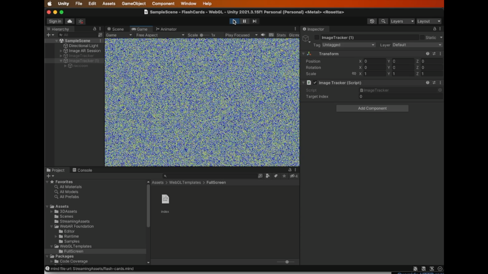
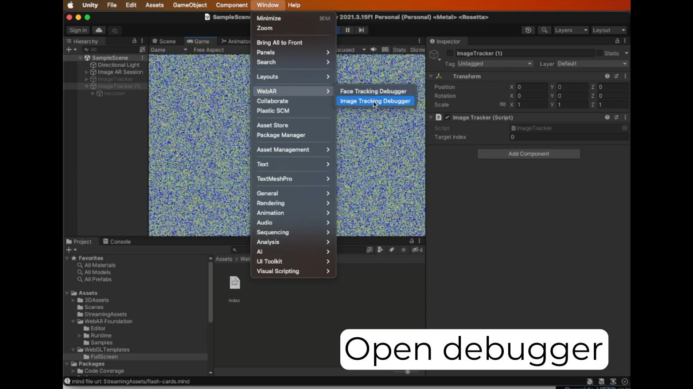
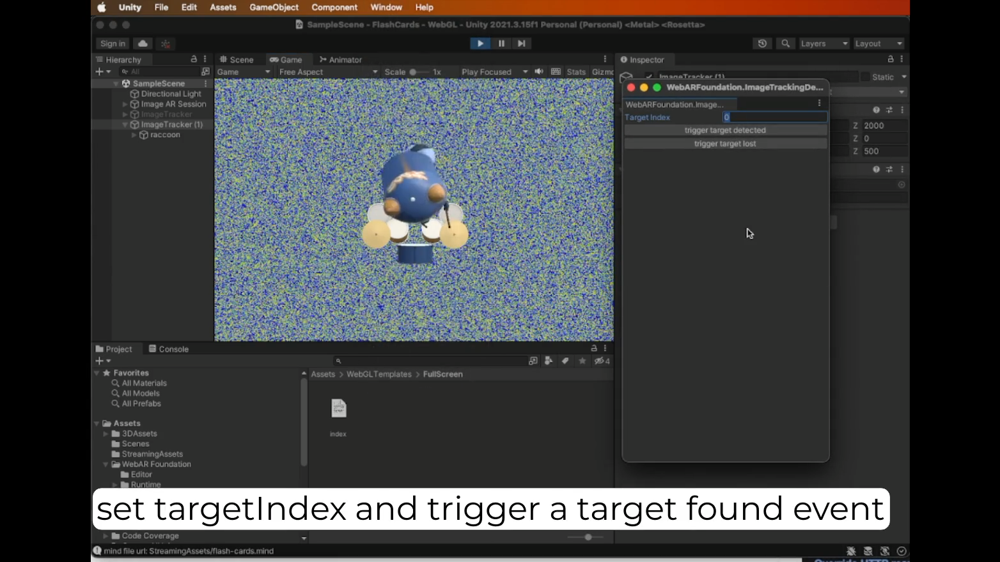
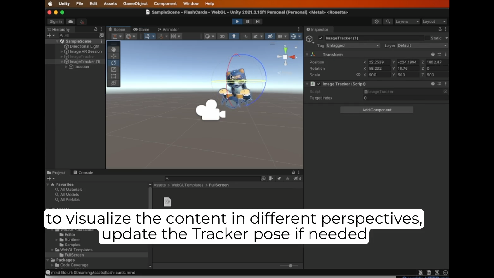

To ease development, WebAR Foundation comes with a debugger for image tracking which can run in Editor.
1. Run the project in editor mode. You should see a randomized texture to simulate the webcam video feed.

2. To open the debugger panel, go to "Window" -> "WebAR" -> "Image Tracking Debugger"

3. trigger `Target Found` and `Target Lost` events for specific targetIndex.

4. Go to "Scene" tab, and modify the ImageTracker pose to visualize the content in different perspective.
